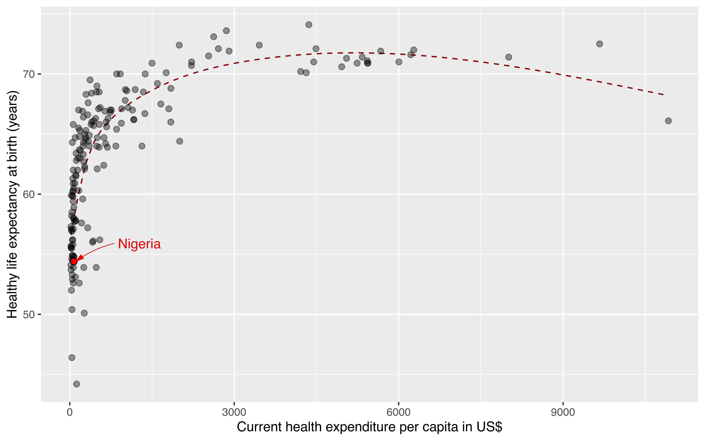
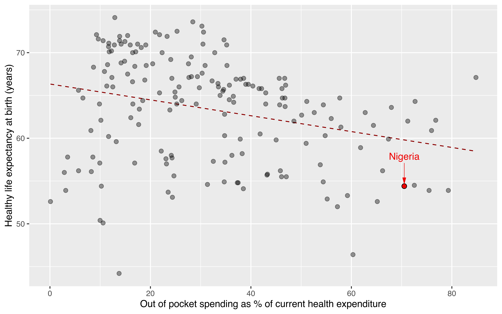
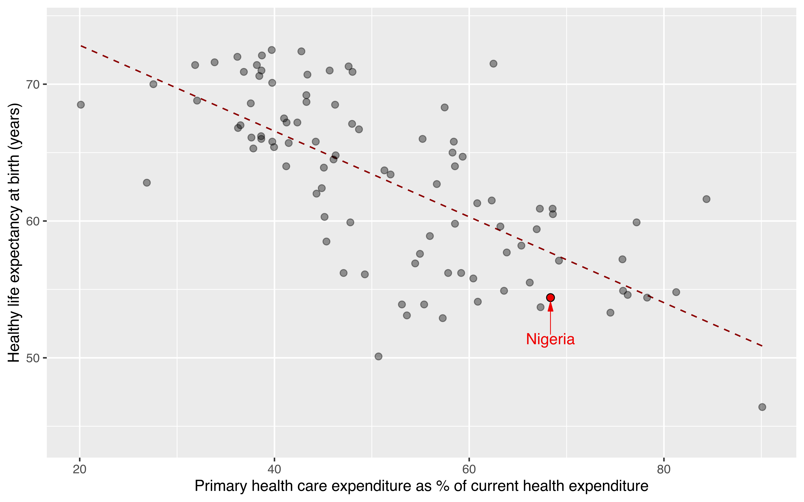
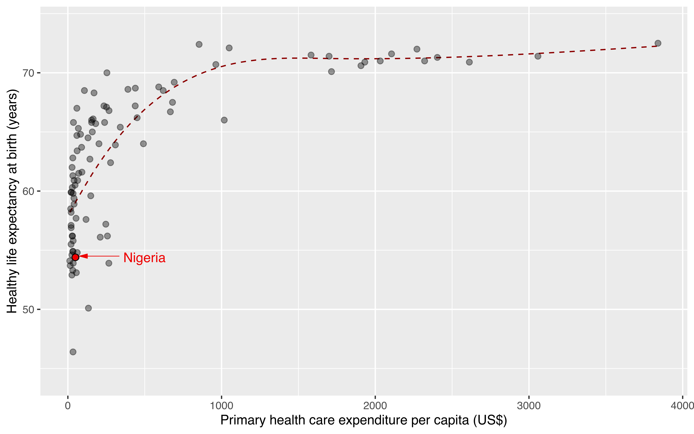
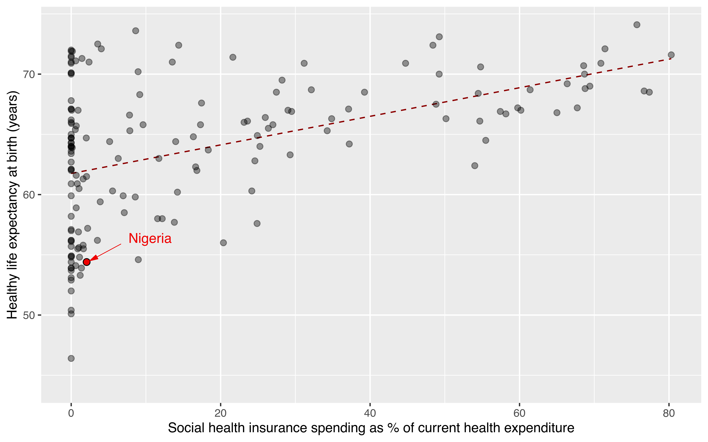

Nigeria’s health system: A story in five charts
Nigeria is Africa’s most populous country and the continent’s largest economy. However, it lags on several critical measures of health. The country ranks near the bottom of the league for the population’s health. There is a gap between the current realities of the Nigerian health system and the expectations regarding the system. Within that gap lies opportunities to increase investment in health and improve Nigerians’ health outcomes.
Indicators such as healthy life expectancy (HLE) and measures of disease burden like maternal mortality ratio (per 100,000 births) and under-five mortality rate (per 1000 live births) emphasize the poor performance of the Nigerian health system. HLE is a clear, consistent, and important population health outcome measure that can inform judgments about the value of health care investment. HLE is also an important guide to evaluating resource allocation for health care systems. (Stiefel et al., 2010) Current health expenditure (CHE) indicates the level of resources channelled to health relative to other uses. CHE shows the importance of the health sector in the whole economy and indicates the priority of health measured in monetary terms. (World Health Organization, 2022a)
In 2019, Nigerians’ life expectancy and healthy life expectancy were 62.6 years and 54.4 years. Maternal mortality in 2017 was 917. The under-five mortality rate was 114 per 1000 live births. Half of the 5 million under-five deaths in 2020 occurred in just Nigeria and four other countries. (World Health Organization, 2022b) A higher public health expenditure significantly decreases child and maternal mortality and increases life expectancy. (Rana et al., 2018) Public health expenditure has a negative correlation with infant mortality and under-five mortality. (Yaqub et al., 2012) The following five charts highlight the poor investment in health, inefficiency and waste that commonly occurs. The data used to generate these charts are from 1) the Global Health Expenditure Database and 2) the Global Health Observatory.
Current health expenditure per capita

In 2019, Nigeria spent $71.5 as current health expenditure per capita. Countries that spend similarly to Nigeria per capita have a longer healthy life expectancy (Figure 1). This suggests that $1 spent per capita on health in Nigeria is not as cost-effective as $1 spent per capita in these other countries.
Out of pocket expenditure as percentage of current health expenditure

In 2019, out-of-pocket expenditure in Nigeria was 70.5% of current health expenditure. As shown in Figure 2, this is quite a significant portion of the total current health expenditure and highlights health care financing gaps. It also indicates that most of the population has a high risk of financial distress in the event of severe health challenges. We can see a clear negative relationship between the proportion of out-of-pocket spending and healthy life expectancy. Higher out-of-pocket spending on health indicates poor health system financing, which the population tries to remedy through out-of-pocket spending.
Primary health care spending as % of current health expenditure

At first glance, Figure 4 suggests that higher spending on primary health care is related to shorter life expectancy. However, Figure 5 reveals a more nuanced picture. Expenditure on primary health care contributes more to current health expenditure because overall health budgets are small.
Primary health care spending per capita

So what have we learned? Life expectancy in Nigeria is shorter than its peers - a reflection of the state of the health system. One dollar spent on health is not as cost-effective as in other countries. A majority of the health care spending is still out-of-pocket.
Social health insurance spending as % of current health expenditure

We see the opposite to out-of-pocket health expenditure with social health insurance spending. There is a positive relationship between social health insurance as a percentage of current health expenditure and healthy life expectancy. As in Figure 1, we notice that several countries with similar proportions of social health insurance spending rank higher than Nigeria on life expectancy. Waste and inefficiency seem to be recurring themes.